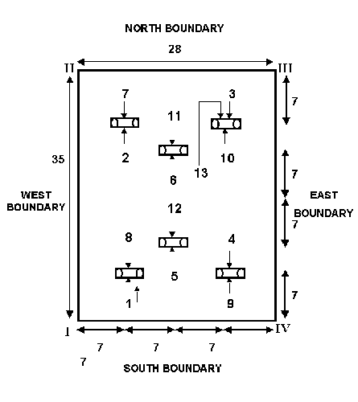

A flat, rectangular lawn, ideally 35 yards long by 28 yards wide, offers the standard playing field, but any area of 4x5 proportion will do.
This layout tests both the tactical and stroke skills of players.
Players compete to pass their balls through the same hoop in the correct sequence. The sequence is critical and requires strategic planning to optimize each shot. See the annotated diagram above displaying the standard sequence of hoops, offering new players a visual path to follow.
Objective: The aim is to be the first to pass the ball through the designated hoop, scoring one point per hoop.
Turns and Play: Players hit their balls once per turn, attempting to pass through the current hoop. The order is based on ball colour - Blue, Red, Black, Yellow. The Blue and Black are partners, as are the Yellow and Red.
Strategic Plays: Blocking and clearing opponent's balls are legal and encouraged to disrupt their trajectory and gain advantage.
Ending the Game: The game concludes when a player reaches 7 points first.